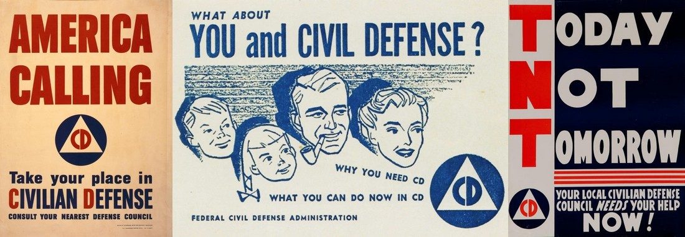

Qué puedes hacer con ella
- Advierte a otros de un peligro tocando el mapa y creando una alerta para que los demás la vean.
- Añade comentarios, fotos, video u otros archivos adjuntos tocando una alerta.
- Recibe notificaciones de nuevas alertas cerca de ti o en tu mapa actual.
- Comparte en redes sociales, por mensaje de texto o por correo electrónico.
Temas
Controla qué temas se muestran en el mapa simplemente tocando las etiquetas de los temas para activarlos y desactivarlos.
Puedes añadir o crear los tuyos escribiéndolos en el cuadro «añadir tema». Si tu texto empieza con un emoji, este se usará como marcador en el mapa.
El «botón de opción» rojo junto al nombre de un tema indica que será el tema inicial de una nueva alerta que crees al tocar el mapa. También puedes cambiar el tema de una alerta que hayas creado tocando el nombre del tema en la ventana emergente de conversación de la alerta.
Compartir
Cada alerta que hagas será visible de inmediato para cualquiera que tenga la app y esté viendo ese punto del mapa. Cada respuesta que publiques se compartirá de inmediato con cualquiera que esté viendo la misma alerta.
Puedes usar el botón de compartir para enviar un enlace y un mensaje a quienes quizá aún no tengan la app. El botón aparece en el mapa, en la parte superior de la conversación de una alerta y junto a cada respuesta, y comparte aquello junto a lo que aparece.
Opciones
El botón «CD» de la app te da control sobre las notificaciones, cómo te ven los demás y las actualizaciones.
Comunica con seguridad
Resiste el rastreo
- No es posible identificarte como persona porque no hay inicio de sesión, registro ni cuentas. No se usa número de teléfono ni correo electrónico. No hay tienda de aplicaciones que registre las descargas. Los usuarios pueden optar por que otros los reconozcan a lo largo de varias interacciones, sin revelar su identidad real.
- Es extremadamente difícil identificar tu dirección IP o tus patrones de red, porque las alertas se distribuyen de teléfono a teléfono a través de una red entre pares (peer-to-peer).1
- Los mensajes son firmados por el remitente y se envían directamente por la red, o a través del servicio de mensajería de Apple o Google, sin identificar la app, el tema, el remitente ni el contenido.
- Cada alerta desaparece de toda la red después de 24 horas. No existen registros recopilados de mensajes, comentarios ni temas solicitados1, y esto no es un sistema de archivo ni de almacenamiento a largo plazo.
Resiste la censura
- No se puede censurar a ningún usuario porque no hay cuentas. Nadie puede robar tu información de cuenta porque no existe.
- No se puede censurar ningún contenido porque no hay ninguna organización central que controle la red o tenga el poder de alterar el contenido.1
Resiste la eliminación
- Ninguna tienda de aplicaciones puede bloquear Civil Defense: la app es solo una página web.
- Derribar servidores web o nombres de dominio no puede bloquear el acceso a quienes ya lo tienen, porque la app guarda en caché todo lo que necesita en el primer uso. El código abierto está disponible para que cualquiera pueda alojar un espejo alternativo.
- No hay servidor de respaldo ni centro de datos que derribar. Todos los datos de las alertas son enteramente entre pares. Todos los espejos comparten esta red: una publicación en civildefense.io aparece en el espejo de ki1r0y.com y viceversa.1
- Bloquear el tráfico de red es extremadamente difícil, porque los datos de bajo nivel son idénticos al tráfico de videoconferencia.1
- Civil Defense es muy resistente a los ataques de denegación de servicio.1 Sin embargo, requiere un Internet que funcione y, por sí sola, no ofrece ninguna protección frente a un apagón total de Internet.
El panorama general
Defensa Civil funciona sobre la red Axona1. Ambas son gratuitas y de código abierto.
Axona es una descendiente moderna de las antiguas redes entre pares como Napster. Tiene un mecanismo de enrutamiento autorreparable único que usa técnicas de aprendizaje neuronal para encontrar la mejor manera de distribuir las alertas. Es análoga a TOR (The Onion Router), pero diseñada desde cero para funcionar en navegadores móviles y de escritorio.
También estamos desarrollando un sistema criptográfico integral, preparado para la era cuántica, que añadirá grupos privados para Civil Defense y para cualquier software de la red. Creemos que hay muchas aplicaciones en las que desarrolladores, usuarios y el público en general se benefician del software abierto y de redes seguras y descentralizadas, sin tiendas de aplicaciones, servidores ni centros de datos. Más allá de Civil Defense, también estamos desarrollando colaboración multiusuario a gran escala y sistemas de pago instantáneo inclusivos.
1: Se lanza en otoño de 2026.
Cómo puedes ayudar
Necesitamos ayuda de personas con experiencia en:
- Organización, acción y apoyo comunitarios
- Derechos civiles; derechos humanos; apoyo internacional
- Diseño de experiencia de usuario
- Pruebas
- Derecho
- Financiamiento
Contacta a yz.social c/o howard.stearns@gmail.com
